关闭此标签页即可返回编辑界面。
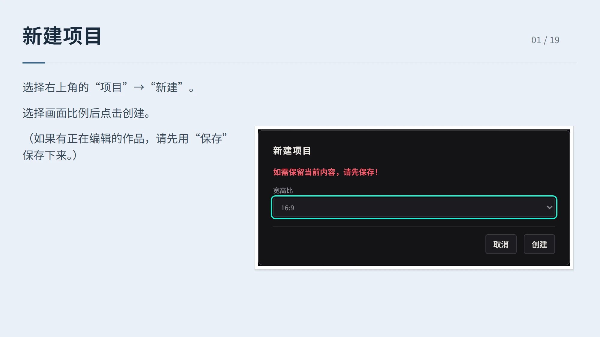
新建项目 01 / 19 选择右上角的“项目”→“新建”。 选择画面比例后点击创建。 （如果有正在编辑的作品，请先用“保存”保存下来。）
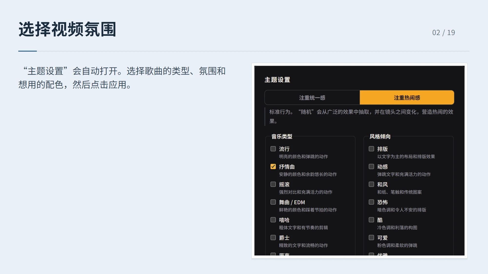
选择视频氛围 02 / 19 “主题设置”会自动打开。选择歌曲的类型、氛围和想用的配色，然后点击应用。
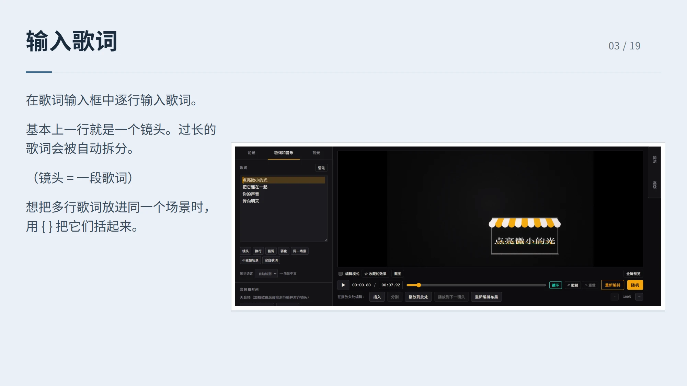
输入歌词 03 / 19 在歌词输入框中逐行输入歌词。 基本上一行就是一个镜头。过长的歌词会被自动拆分。 （镜头 = 一段歌词） 想把多行歌词放进同一个场景时，用 { } 把它们括起来。
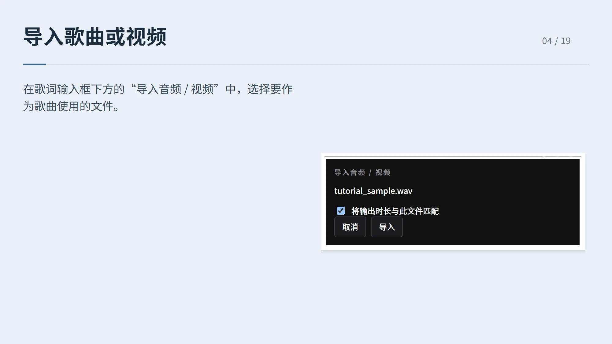
导入歌曲或视频 04 / 19 在歌词输入框下方的“导入音频 / 视频”中，选择要作为歌曲使用的文件。
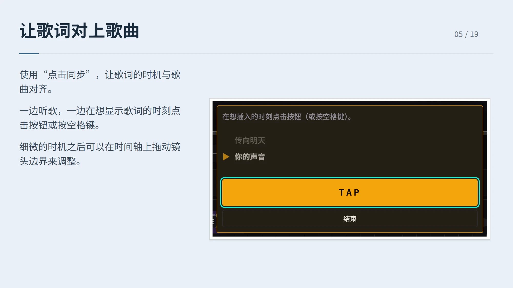
让歌词对上歌曲 05 / 19 使用“点击同步”，让歌词的时机与歌曲对齐。 一边听歌，一边在想显示歌词的时刻点击按钮或按空格键。 细微的时机之后可以在时间轴上拖动镜头边界来调整。
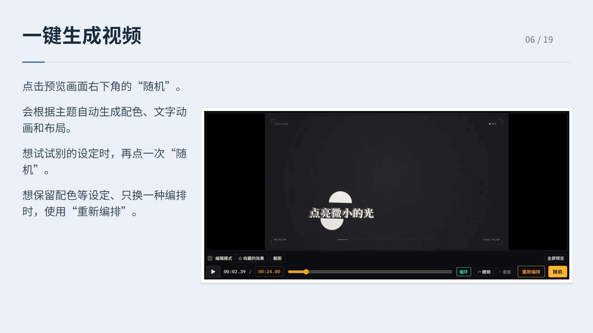
一键生成视频 06 / 19 点击预览画面右下角的“随机”。 会根据主题自动生成配色、文字动画和布局。 想试试别的设定时，再点一次“随机”。 想保留配色等设定、只换一种编排时，使用“重新编排”。
添加图片 07 / 19 在“背景”或“前景”中点击“添加”导入图片。 在时间轴上指定插入位置，或用“按歌词插入镜头”一次性放置。 插入时间轴后，再用“随机”或“重新编排”尝试不同构成。 （背景显示在歌词后方，前景显示在歌词前方。）
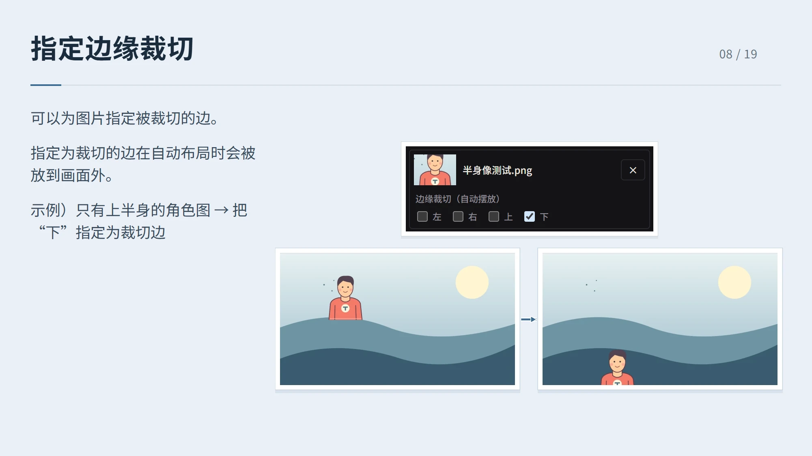
指定边缘裁切 08 / 19 可以为图片指定被裁切的边。 指定为裁切的边在自动布局时会被放到画面外。 示例）只有上半身的角色图 → 把“下”指定为裁切边
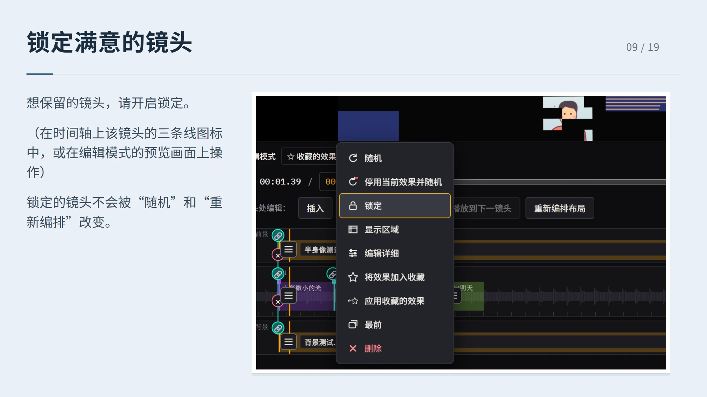
锁定满意的镜头 09 / 19 想保留的镜头，请开启锁定。 （在时间轴上该镜头的三条线图标中，或在编辑模式的预览画面上操作） 锁定的镜头不会被“随机”和“重新编排”改变。
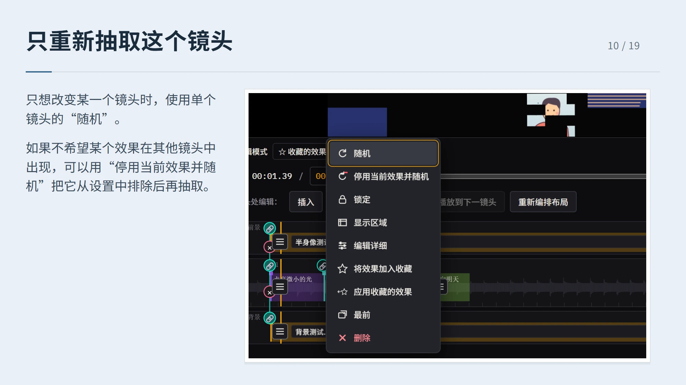
只重新抽取这个镜头 10 / 19 只想改变某一个镜头时，使用单个镜头的“随机”。 如果不希望某个效果在其他镜头中出现，可以用“停用当前效果并随机”把它从设置中排除后再抽取。
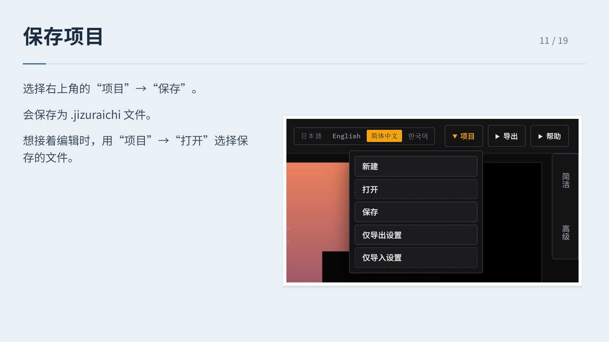
保存项目 11 / 19 选择右上角的“项目”→“保存”。 会保存为 .jizuraichi 文件。 想接着编辑时，用“项目”→“打开”选择保存的文件。
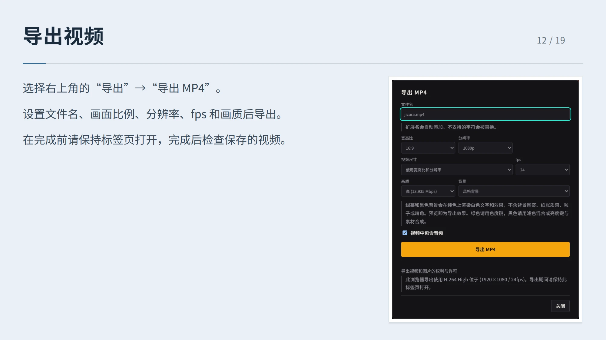
导出视频 12 / 19 选择右上角的“导出”→“导出 MP4”。 设置文件名、画面比例、分辨率、fps 和画质后导出。 在完成前请保持标签页打开，完成后检查保存的视频。
以下为进阶篇 13 / 19
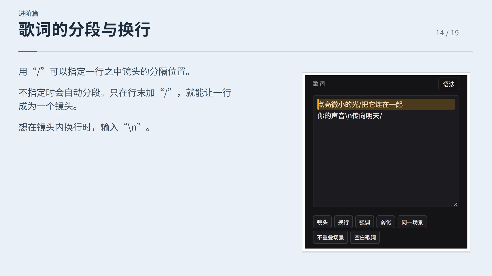
进阶篇 歌词的分段与换行 14 / 19 用“/”可以指定一行之中镜头的分隔位置。 不指定时会自动分段。只在行末加“/”，就能让一行成为一个镜头。 想在镜头内换行时，输入“\n”。
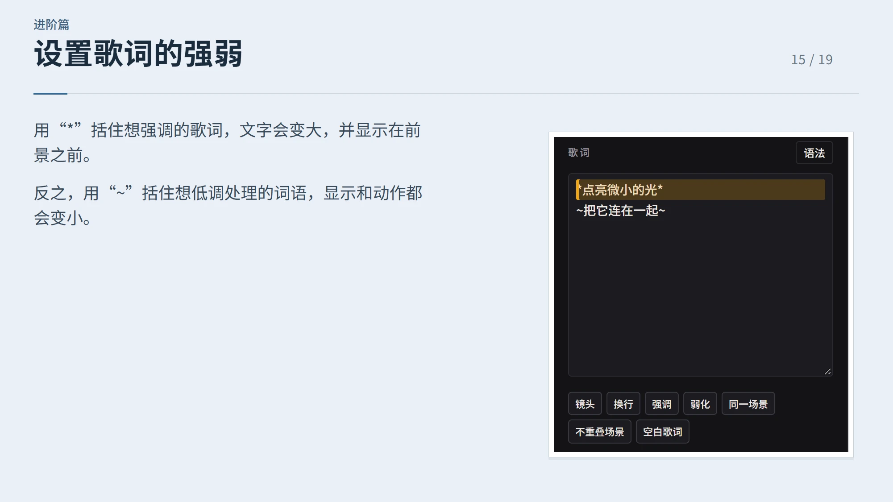
进阶篇 设置歌词的强弱 15 / 19 用“*”括住想强调的歌词，文字会变大，并显示在前景之前。 反之，用“~”括住想低调处理的词语，显示和动作都会变小。
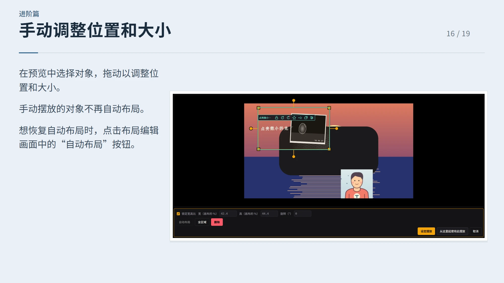
进阶篇 手动调整位置和大小 16 / 19 在预览中选择对象，拖动以调整位置和大小。 手动摆放的对象不再自动布局。 想恢复自动布局时，点击布局编辑画面中的“自动布局”按钮。
进阶篇 在“高级”中调整整体 17 / 19 从右侧的“高级”可以调整整个视频的设置。 风格、颜色、字体、动作强度等。 “随机”中出现的效果，也可以在这里开启或关闭是否参与抽取。
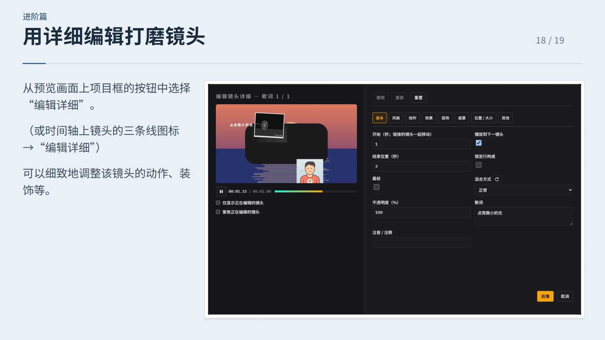
进阶篇 用详细编辑打磨镜头 18 / 19 从预览画面上项目框的按钮中选择“编辑详细”。 （或时间轴上镜头的三条线图标 →“编辑详细”） 可以细致地调整该镜头的动作、装饰等。
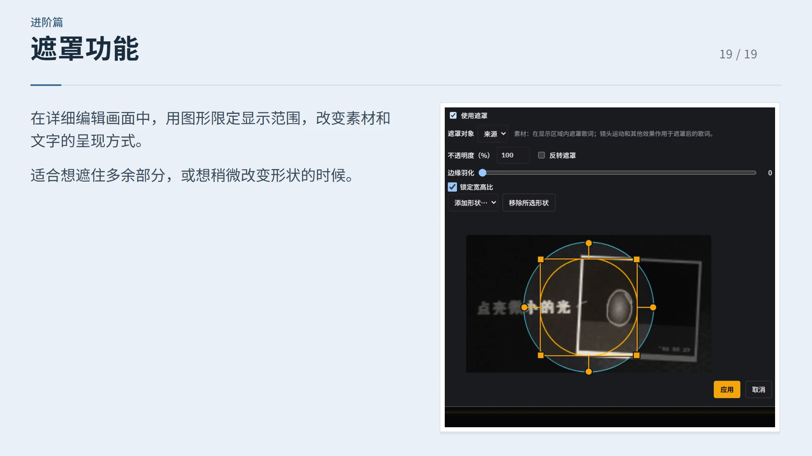
进阶篇 遮罩功能 19 / 19 在详细编辑画面中，用图形限定显示范围，改变素材和文字的呈现方式。 适合想遮住多余部分，或想稍微改变形状的时候。